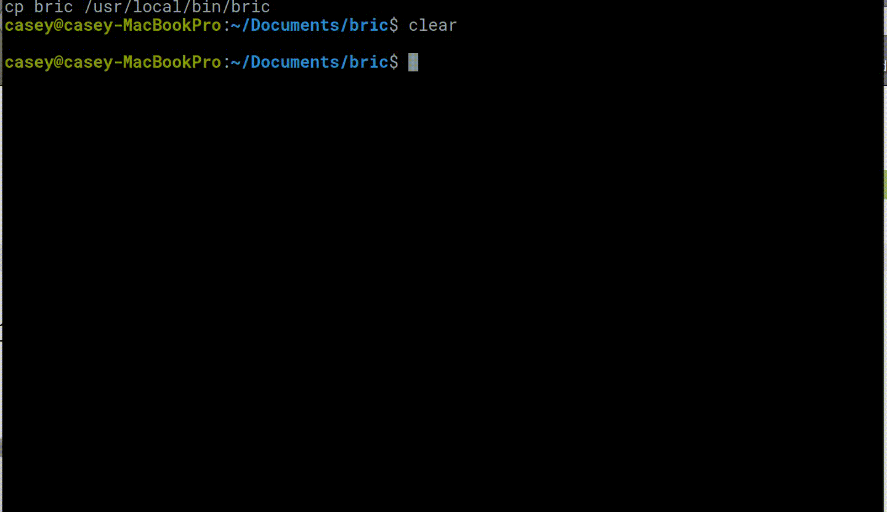

bric - text editor
This past week I've spent taking a small text editor made by antirez, adapting it and adding new features.

The editor uses VT100 escpae sequences to write to the terminal to output characters and the cursor etc. It also uses the "alternate screen buffer", which originated in xterm but is nowadays supported by most terminals. Alternate screen buffer is designed to provide exactly this
functionality for full-screen terminal programs. In normal operation,
output gets added to the scrollback buffer (and most terminals let the
user scroll back to previous lines). Switching to the alternate screen
buffer the scrollback buffer is left alone, and alternate screen buffer
output is not added to the scrollback buffer. When returning from
alternate screen buffer, the original scrollback buffer state is
restored. This is what full-screen applications like nano use.The original editor kilo was written over a weekend by Salvatore Sanfilippo. You can read his blogpost on his site.
I've taken the base of the kilo editor and have started to modularise it into different components and features (like syntax highlighting and git integration). So far I've added more in-depth syntax highlighting (needs to be fixed first though hah) and a goto function to make navigating the file easier.
Some of the planned features are:
- Git integration
- More syntax keyword colours
- More language syntax highlighting
- More shortcuts
- Yank & paste lines
- Append to end of line
- Jump to beginning of line
- Soft/hard wrap lines
- Auto indent
- Line numbers
- Config file rather than hard coded colours etc
I will continue to add more features and hopefully get more of the open source community involved, but for the moment I think having this little editor is definitely useful and quite cool really.